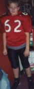
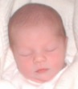
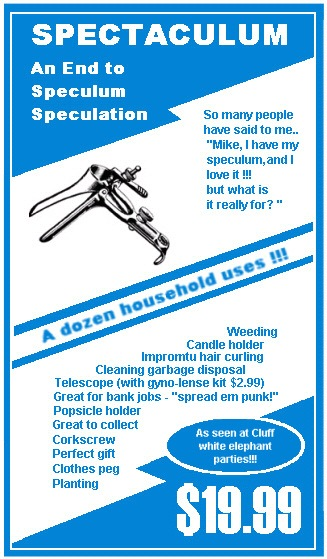

Playing With Fire When Dallas Cluff, age 12, started a fire down at the firepit, he thought nothing of it. He'd been building and starting fires since he was three. By six he was an expert. But this time he forgot one important factor - it was daytime. It was also the height of fire season and burning was prohibited, but the Cluffs usually got around that technicality by burning at night when the smoke is undetectable. But it wasn't dark, and the fire department was soon knocking on the Cluff's front door. A neighbor (no doubt someone disgruntled by the new rooster) had reported the fire. Diana answered the door in her bathrobe. She had no idea there was a fire, let alone how it got started, but she had a pretty good idea who started it. Only trouble was, she didn't know where the probable culprit was, he'd taken off without telling her. Finally, Dallas came meandering back into the yard and right into trouble. He escaped getting a fine, but had to endure a stern warning and a prolonged fire-hazard presentation. Promising to be more cautious, he refrained from lighting another fire - for two whole days!
When Dallas Cluff, age 12, started a fire down at the firepit, he thought nothing of it. He'd been building and starting fires since he was three. By six he was an expert. But this time he forgot one important factor - it was daytime. It was also the height of fire season and burning was prohibited, but the Cluffs usually got around that technicality by burning at night when the smoke is undetectable. But it wasn't dark, and the fire department was soon knocking on the Cluff's front door. A neighbor (no doubt someone disgruntled by the new rooster) had reported the fire. Diana answered the door in her bathrobe. She had no idea there was a fire, let alone how it got started, but she had a pretty good idea who started it. Only trouble was, she didn't know where the probable culprit was, he'd taken off without telling her. Finally, Dallas came meandering back into the yard and right into trouble. He escaped getting a fine, but had to endure a stern warning and a prolonged fire-hazard presentation. Promising to be more cautious, he refrained from lighting another fire - for two whole days!
Rabid Computer Put Down
For years Dennis has had to put up with a dinosaur computer and its Barbie-sized monitor. "Our old computer was haywire," says a distraught Dennis. "So finally, I had a new computer put together and it WORKS! We also got a 17" monitor so now I can actually read stuff!" Before the new monitor Dennis had to set his font size at 36 in order to see anything. But now he is able to read whole paragraphs on his screen at once! But is this new upgrading frenzy an anomaly, or will the Cluffs finally decided to replace the most decrepit item in their possession - the motorhome? "Not likely," says Diana with disdain. "I'm planning on using the motorhome as a guest house until gas prices come down and Dad is cured of his narcoleptic driving tendencies."
Johnson's Abandon Their New Home
Only weeks after settling into their new mountain retreat home, Tiana and Hyrum decided to leave. Their new destination: Coquille. The move came about when Hyrum took a job working for Dane. The Johnson's are now temporarily living in Dane and Karen's basement - an arrangement which seems to be working out very well. "Tiana, Hyrum and Talea have been a welcome addition to the household," says Karen affectionately. Despite having to revert back to cramped living conditions (most of their marriage has been spent in a truck or trailer) the Johnson family is very happy and love their new life on the beautiful Oregon coast.
Promiscuous Dog Gets
"The Chop"
In the Cluff family being promiscuous can lead to serious, dire and very permanent consequences - as poor Rolo has just discovered. Rolo is Dane and Karen's family dog. This summer when the Johnson's moved in with the Cluff's, Cowboy, Indian and Scout came with them. "Rolo has enjoyed the company of Indian and Scout," says a slightly amused Karen, "but is secretly conspiring against Cowboy who has uncontrollable growling fits whenever Rolo walks by. This could be due to the fact that Cowboy caught his wives, Indian and Scout, having a dog orgy on the 'love trampoline' with Rolo. This went on for what seemed like days! Cowboy seemed determined to get rid of Rolo one piece at a time, so we took Rolo to the Vet to get his manliness taken away."
Surprise Speaker
 After sacrament, Dallas sat up on the stand instead of with his family. Initially his parents thought nothing of it - boys often took turns helping the Bishop in this way. But then the conductor announced that Dallas would be speaking. "I froze," said his terrified mother. "Dallas is speaking?! He didn't mention anything to me or his Dad! We never helped him get a talk ready!" Then Dallas stood up and started speaking. He read a couple of scriptures and talked about the deacons, their work and how he like having the priesthood. "He did really well," said his relieved mother "I was so tense, but could finally let my breath out. After the meeting Dallas told me he was asked to speak just seven minutes before the meeting to fill in for a boy who didn't show up. But he pulled it off and has proved himself to be a good speaker." After sacrament, Dallas sat up on the stand instead of with his family. Initially his parents thought nothing of it - boys often took turns helping the Bishop in this way. But then the conductor announced that Dallas would be speaking. "I froze," said his terrified mother. "Dallas is speaking?! He didn't mention anything to me or his Dad! We never helped him get a talk ready!" Then Dallas stood up and started speaking. He read a couple of scriptures and talked about the deacons, their work and how he like having the priesthood. "He did really well," said his relieved mother "I was so tense, but could finally let my breath out. After the meeting Dallas told me he was asked to speak just seven minutes before the meeting to fill in for a boy who didn't show up. But he pulled it off and has proved himself to be a good speaker."
Skinny & Sweet Tiana's body has evolved to be so health-conscious that it only produces skimmed milk. Unfortunately, Tiana's baby is old fashioned and prefers whole milk. "Talea doesn't have baby fat on her at all and you can feel all her bones in her back," says concerned grandmother, Diana. "But she smiles a lot and is so sweet." Tiana has introduced the bottle to encourage her little waif to fatten up, and it seems to be working. "I hardly recognize her anymore," says Tiana. "I got so used to her being skinny." A group of pesky entrepreneurs are now trying to persuade Tiana to bottle her milk and sell it as the next big new liquid diet craze. She has refused.
Tiana's body has evolved to be so health-conscious that it only produces skimmed milk. Unfortunately, Tiana's baby is old fashioned and prefers whole milk. "Talea doesn't have baby fat on her at all and you can feel all her bones in her back," says concerned grandmother, Diana. "But she smiles a lot and is so sweet." Tiana has introduced the bottle to encourage her little waif to fatten up, and it seems to be working. "I hardly recognize her anymore," says Tiana. "I got so used to her being skinny." A group of pesky entrepreneurs are now trying to persuade Tiana to bottle her milk and sell it as the next big new liquid diet craze. She has refused.
Twin Towers
Despite only being in Middle School, the twins are just as tall as their mother and already outweigh her too. "They have such big chests," says Diana. "They are the biggest on their football team for muscle." Both boys are starters on offense and defense (Weston is the center and Dallas is a guard) and both are defensive ends. Despite being the right size, Dallas and Weston lost their first two football games this season. This may be due, in part, to the fact that their cheering section is failing to provide adequate support. Even their own mother abandoned them after the first quarter. "She couldn't stand the way one guy put his hand in another guy's crotch and then how they bang into each other," says her exasperated husband, Dennis. "I kinda think her mind is closed on this issue." But Diana defends her early retreat. "Football!" she groans, "Only a man could have invented it! I hate watching the boys fall down constantly and then there are the boys that try to put their hand in Weston's crotch. Plus, I can't stand the people behind me in the grandstands yelling, especially when they say 'KILL HIM' over and over. I put my fingers in my ears for a long time then I just couldn't take it, and left. If I'm ever forced to go again I am taking my ear plugs, my ear muffs, my book, a seat pad, blankets and a hot water bottle." But Diana's lack of support hasn't dampened the boys enthusiasm for the game. "Now the boys say they want to be pro-football men," Diana says in horror. "HELP, HELP!"
A Couple of Jokes
Q. What did Geronimo say when he jumped out of the airplane?
A. ME!!!
Q. Why was the math book sad?
A. Because it had too many problems.
|
|
WELCOME NEW BABY GIRL:
DRU ALEXANDRIA
On July 30th another beautiful, little TuffCluff was born, taking the tally of grandchildren to an even dozen. Dru Alexandria was just 6lb and very pretty. Natasha's second birth seemed to go fairly smooth. "It all started Thursday afternoon with what seemed like Braxton-Hicks contractions," says Natasha. "I was really exited because I was anxious to not be pregnant anymore. I tried to take a nap around 5pm but was too distracted by the fact the contractions wouldn't stop. At about 3am I woke Steve up and we timed the contractions. They were five minutes apart, so we called the midwife. The funny thing was that I kept thinking they would just slow down and stop; I kept thinking the same thing up until I was in transition. Steve and I left for the birthing center at 6.15 and when we got there I was dilated to a 4 and not going home. Steve and I sat on the bed reading the newspaper and talking until our Doula showed up around 8am. Everyone seemed surprised that I was so relaxed and mellow for a woman in labor, but every contraction still felt like Braxton-Hicks to me. I was checked again around 9.30am and hadn't made much progress, so they broke my water. Within 20 minutes I was at 6cm and they told me I could get in the birthing pool. I was only in the water for about a half an hour before I hit transition. I jumped out of the tub and two pushes later they were handing me Dru! I couldn't believe how fast it was! Steve has help me so much. He took a week and a half off work and did all the chores from laundry and cleaning to cooking and errands. Steve's really happy to be a dad and freaks out everyday about how much he loves it. It's pretty cool. Cage is doing really well with the new sibling thing too. I try to involve her in everything and she seems very happy." Congratulations Natasha and Steve!
Daisha & Edward Tie the Knot
 On June 5th Daisha and Edward were married in an 11th century church in the beautiful Surrey countryside. It was a simple wedding with a traditional ceremony. Many of their relatives were in attendance, including several members of Daisha's family from the US. The happy couple spent their honeymoon on a two week Mediterranean cruise visiting Italy, Greece, Malta and Croatia. They then travelled to the US for two weeks where they had their American reception in Ashland's beautiful Lithia Park. After the reception they toured several National Parks (Yosemite, The Redwoods, The Grand Canyon, Death Valley and Crater Lake) and spent a few days in Vegas. Just six weeks after the wedding the happy couple discovered that they were going to have a baby. They are thrilled with the news and look forward to the end of March when their baby is due. Daisha and Edward have a home in a small village just outside London where they will live with their children. Edward will continue working for the investment bank, Goldman Sachs, while Daisha plans on being a full-time housewife and mother. On June 5th Daisha and Edward were married in an 11th century church in the beautiful Surrey countryside. It was a simple wedding with a traditional ceremony. Many of their relatives were in attendance, including several members of Daisha's family from the US. The happy couple spent their honeymoon on a two week Mediterranean cruise visiting Italy, Greece, Malta and Croatia. They then travelled to the US for two weeks where they had their American reception in Ashland's beautiful Lithia Park. After the reception they toured several National Parks (Yosemite, The Redwoods, The Grand Canyon, Death Valley and Crater Lake) and spent a few days in Vegas. Just six weeks after the wedding the happy couple discovered that they were going to have a baby. They are thrilled with the news and look forward to the end of March when their baby is due. Daisha and Edward have a home in a small village just outside London where they will live with their children. Edward will continue working for the investment bank, Goldman Sachs, while Daisha plans on being a full-time housewife and mother.
Shira & Jeremy Marry
Shira and Jeremy were married on June 22nd in a quiet ceremony at Jeremy's family home in Ashland. Shira wore her mother's wedding dress. "They decided to marry while Shira was in London for Daisha and Edward's wedding," says Shira's mother Diana. "Just a day after she returned, they married. Dad, Nial and I attended. It was short and sweet. They left for their two day honeymoon at The Mark Anthony Hotel immediately following the ceremony." But a two day Ashland honeymoon proved to be insufficient for the happy couple who then embarked upon a European tour including London, Paris and Amsterdam. Shira and Jeremy are now living in Ashland while Jeremy attends Southern Oregon University. Jeremy plans to finish his schooling in either Portland or San Diego. Shira keeps busy with painting, music and other artistic endeavors.
Sevey Family Reunion
 Next summer, August 10 - 13 2005, there will be a Sevey reunion in the breathtaking Redwood forest on the California coast. Hiouchi Hamlet has been reserved for our group and is located nine miles inland from Crescent City - just across the road from the Jedediah Smith state park entrance. An RV park is available for those who are interested, otherwise various accommodations can be found in the plentiful motels of Crescent City. The Sevey reunion of 2005 promises to be a great adventure with the crystal clear Jedediah Smith river and the pristine beaches of the beautiful Pacific Northwest only moments from base camp. You don't want to pass this one up. Mark your calendars now. Next summer, August 10 - 13 2005, there will be a Sevey reunion in the breathtaking Redwood forest on the California coast. Hiouchi Hamlet has been reserved for our group and is located nine miles inland from Crescent City - just across the road from the Jedediah Smith state park entrance. An RV park is available for those who are interested, otherwise various accommodations can be found in the plentiful motels of Crescent City. The Sevey reunion of 2005 promises to be a great adventure with the crystal clear Jedediah Smith river and the pristine beaches of the beautiful Pacific Northwest only moments from base camp. You don't want to pass this one up. Mark your calendars now.
A Turbulent Anniversary
You know the romance is gone when you celebrate your anniversary by visiting relatives. But the honeymoon is truly over when your kids are invited along for the trip. This year for their 41st anniversary, Dennis, Diana and the boys drove to San Diego to visit Natasha, Steve, Cage and new baby Dru. They left early but only got as far as the grapevine before having to stop and sleep at a rest area. When they finally arrived in San Diego they toured Old Town, visited the Mormon Battalion monument, went to both the San Diego and L.A. temples and ate at Tito's Tacos. While this was all very exciting, it was the family trip to the beach that proved to be the biggest adventure of all. It was Labor Day weekend and the beach was overcrowded. The waves were unusually intense due to a storm off the Baja peninsula. The lifeguards were kept busy and, by the end of the day, had chalked up 70 rescues. It was under these circumstances that the Cluffs descended onto the beach. Diana had forgotten to prep the boys with her customary cautionary tales of oceanic danger. Without a word of warning the boys broke free from the group and immediately disappeared into the turbulent sea. "I spent over an hour looking for the twins in the waves," reports a distraught Diana. "Natasha and Steve searched the shore, then Dad took over and then I took over again. I hadn't told the boys anything; to check landmarks on shore, how to handle waves or to be careful of riptides and weird people. I walked a long way down the beach and finally found Nial coming out of the water. I thought I saw Dallas beyond the waves and Nial dashed in to find him, but it was a false alarm. I decided to walk further down the beach then suddenly, from nowhere, I heard, 'Hi Mom, where is everyone?' It was Dallas! I asked where Weston was and he said he was coming right behind him. The boys were very sunburned but had a great time surfing while the rest of us were worried sick. Now they want surfboards and to move to Southern California. No way!" After their big beach adventure Dennis and Diana were exhausted and decided to end their vacation and head back to Ashland. On the way back the Cluffs stopped in Arbuckle to pick pomegranates. The boys were sent into the thorny bushes to fill several shopping bags with fruit as a partial punishment for their beach escapades. The rest of their punishment came from Diana, who decided to serve homemade food in the car the whole way home. At every passing exit on their long, long journey home, the boys were tortured with the sights and smells of Burger Kings, Taco Bells and McDonalds. When exits were sparse, billboards with 15 foot pictures of juicy hamburgers began to spring up everywhere - mocking the peanut butter & slippery elm on Babcock bread sandwiches the boys grudgingly held in their hands. The only comic reprieve on the drive home was spotting a man in a T-shirt that said 'I PICK MY NOSE' in huge letters. Diana thought it was crude, but the boys couldn't stop laughing - for three days. The Cluff's learned two very important lessons on this trip; #1. Never turn your back on the ocean or your mother & #2. Anniversaries should be offspring-free.
When Mom's Away...
"I just took Nial to Education Week," says Diana, "and we had a wild time. We learned folk dancing and had so much fun. The twins didn't want to go on the trip so they were left behind. But when we arrived home I found that they had taken care of themselves all week which isn't what I had arranged and I freaked. To my surprise they did ok, so I guess they are growing up. There was one night when Weston and Dallas sneaked out and went up to Highway 66 to talk to construction workers that were re-paving the road till three in the morning! I wouldn't have left them if I had known they would have been alone in the day, but at night Dad made up for it by taking the boys out to eat and watching all the Star Wars movies, which I hate, so I'm glad they got that done. It was the usual when-Mom-leaves-Dad-and-the-kids-have-a-party scenario."
chicken count
 Unbelievably, only ONE of the Cluff's chickens has been killed so far this year. And neither a rabid racoon or a tainted scrap from the mulch bucket was to blame. This time the culprit was Dennis! "I took off the head of one of the roosters," he reports. "We had two, and I relieved the neighbors of the noisiest one. We ate him last week. The turkey's days are numbered now too with Thanksgiving just around the corner." The remaining rooster, thinking he got off easy, had been strutting his stuff until he was hit by a neighborhood dog. In order to escape, he had to sacrifice all of his tail feathers. He is now running around with a naked bottom. His dignity will never recover. But at least he's safe. In fact, all the chickens are safer than ever. Dennis has fortified the coop with prison-grade chicken wire to discourage unwanted intruders. He's reinforced both the roof (to keep out the climbers) and the underground perimeter (to keep out diggers). Happy and secure, the chickens are now laying eggs en masse. "We get lots of eggs each day," says Diana, "and are now overloaded! I thought I'd have to free some of the chickens to cut down on their production, but decided to give the eggs away instead. The neighbors have to put up with the rooster's noise and the chickens going into their yard, so we give them the eggs as a peace offering." Unbelievably, only ONE of the Cluff's chickens has been killed so far this year. And neither a rabid racoon or a tainted scrap from the mulch bucket was to blame. This time the culprit was Dennis! "I took off the head of one of the roosters," he reports. "We had two, and I relieved the neighbors of the noisiest one. We ate him last week. The turkey's days are numbered now too with Thanksgiving just around the corner." The remaining rooster, thinking he got off easy, had been strutting his stuff until he was hit by a neighborhood dog. In order to escape, he had to sacrifice all of his tail feathers. He is now running around with a naked bottom. His dignity will never recover. But at least he's safe. In fact, all the chickens are safer than ever. Dennis has fortified the coop with prison-grade chicken wire to discourage unwanted intruders. He's reinforced both the roof (to keep out the climbers) and the underground perimeter (to keep out diggers). Happy and secure, the chickens are now laying eggs en masse. "We get lots of eggs each day," says Diana, "and are now overloaded! I thought I'd have to free some of the chickens to cut down on their production, but decided to give the eggs away instead. The neighbors have to put up with the rooster's noise and the chickens going into their yard, so we give them the eggs as a peace offering."
Summer Crop Update by Dennis
This Summer the weather has been hot but it's cooling down a bit now - it gets below 90 every once in a while. The sprinkler system is on the fritz so weeds are growing while all else dies. The garden is just about finished (corn was sure good) and now the grapes are coming on strong. Canning season is approaching and the branches in our orchard are loaded with fruit. It should be a good season.
Cannery Row
It's late summer and the Cluff family is hard into canning season. This year has been particularly fruitful. "All of our trees are breaking at the branches because they are so loaded with fruit," Dennis says. "We only had four or five nights with frost last winter, and no frost after early March, so the fruit is prolific this year." Dennis and the boys have been running apples through the cider press and have produced more than 20 gallons of apple juice already. They are now starting on grape juice while Diana is hard at work in the kitchen. "I've been canning like mad for months," she says. "We have so much fruit; apples, peaches, plums, grapes, pears and more. The trees just keep producing no matter how much I bottle up. I work until I feel I'm about to faint then press on till all the fruit is processed. My kitchen looks like a factory from the olden days. All my stoves conk out after four years as the burners can't handle the weight of the huge pots of fruit." But surely the Cluff family cannot consume the vast quantities of juice and bottled fruit they put up each year. So what do they do with it all? And where to they keep it? The answer to both questions lies in the barn. "We keep everything in the barn," says Diana. "But my storage room is so full now that I've begun to fill up the exercise room." But why continue canning at a merciless pace if they already have enough to feed the entire tri-county area? "If the fruit isn't used up," says Diana, "it ends up fermenting on the ground which is wasteful and makes our yard smell like a beer garden. I don't want the neighbors thinking we're all out in our yard getting high, so I'm a slave to canning!"
|
|
Old Folks  After a recent trip to Education Week, where Diana took several classes on Folk Dancing, the Cluff household has undergone a massive folksy transition. Gone are the days when the rooster awoke the Cluff children. Now accordions, fiddles and tambourines played at window-rattling levels drown out everything else. "I love waking the offspring up with super-loud folk music," says folk-obsessed Diana. "I turn it up until the accordions are belting it out loud enough to also wake up Nial and the neighbors. I do my folk dances for early morning exercise before the shower. I dance fast, wild dances from Hungary, angry, expressive dances from Turkmenistan and mysterious, primal dances from Former Yugoslavia." Having a house filled with music from various lederhosen-clad European countries has clearly taken its toll on the children. "When my teacher asked me to name a Pharaoh in the Ptolemaic period," complains Weston "I accidentally yelled out 'Shaama Shaama El Mal Ka-momma!' It's so embarrassing but I can't help it, it's like I'm hypnotized."
After a recent trip to Education Week, where Diana took several classes on Folk Dancing, the Cluff household has undergone a massive folksy transition. Gone are the days when the rooster awoke the Cluff children. Now accordions, fiddles and tambourines played at window-rattling levels drown out everything else. "I love waking the offspring up with super-loud folk music," says folk-obsessed Diana. "I turn it up until the accordions are belting it out loud enough to also wake up Nial and the neighbors. I do my folk dances for early morning exercise before the shower. I dance fast, wild dances from Hungary, angry, expressive dances from Turkmenistan and mysterious, primal dances from Former Yugoslavia." Having a house filled with music from various lederhosen-clad European countries has clearly taken its toll on the children. "When my teacher asked me to name a Pharaoh in the Ptolemaic period," complains Weston "I accidentally yelled out 'Shaama Shaama El Mal Ka-momma!' It's so embarrassing but I can't help it, it's like I'm hypnotized."
Arsonists Redeemed
 The Cluffs didn't know what to think when they received a phone call from the High School saying that there had been a fire in the football stadium the previous night and that Nial and his best friend, Bryce, were the suspects. The police and firemen had spent the day at the crime scene and had found fingerprints and clues that pointed them toward the arsonists. They said they wanted to meet with the boys to find out what went on. The Cluffs were disturbed, but not surprised, to find the boys were wanted by the police. On the night of the fire Diana had returned from hula practice for an upcoming church luau to find the house empty. "When I came home all the boys were gone," Diana says. "The twins finally came home but Nial didn't show up until bedtime. Nial and Bryce had gone to a game and forgotten to tell us where they were going." Tragically, this put Nial and Bryce at the scene of the crime on the night in question. Dennis and Diana confronted the boys. They confessed to having been a part of the fire, but not in the way that the police suspected. They said that they left the volleyball game and crossed the football field to get to Bryce's car when they spotted a fire in the empty stadium seating. They ran towards the blaze. Nial grabbed a plastic garbage can to use to smother the fire. Not content with the trash can's ability to extinguish the fire, Nial began jumping on the can. He then told Bryce to run for help. A security guard showed up just as Nial was putting the final flames out. The garbage can was badly melted and damaged beyond repair, but the bleachers were saved - singed, but saved. Diana was very relieved to hear the boy's version of the story! She knew her sweet, innocent little boy could never be an evil arsonist. And she was so happy that she gave him an extra special Doo-Ta-Doo for homenight. The Cluffs didn't know what to think when they received a phone call from the High School saying that there had been a fire in the football stadium the previous night and that Nial and his best friend, Bryce, were the suspects. The police and firemen had spent the day at the crime scene and had found fingerprints and clues that pointed them toward the arsonists. They said they wanted to meet with the boys to find out what went on. The Cluffs were disturbed, but not surprised, to find the boys were wanted by the police. On the night of the fire Diana had returned from hula practice for an upcoming church luau to find the house empty. "When I came home all the boys were gone," Diana says. "The twins finally came home but Nial didn't show up until bedtime. Nial and Bryce had gone to a game and forgotten to tell us where they were going." Tragically, this put Nial and Bryce at the scene of the crime on the night in question. Dennis and Diana confronted the boys. They confessed to having been a part of the fire, but not in the way that the police suspected. They said that they left the volleyball game and crossed the football field to get to Bryce's car when they spotted a fire in the empty stadium seating. They ran towards the blaze. Nial grabbed a plastic garbage can to use to smother the fire. Not content with the trash can's ability to extinguish the fire, Nial began jumping on the can. He then told Bryce to run for help. A security guard showed up just as Nial was putting the final flames out. The garbage can was badly melted and damaged beyond repair, but the bleachers were saved - singed, but saved. Diana was very relieved to hear the boy's version of the story! She knew her sweet, innocent little boy could never be an evil arsonist. And she was so happy that she gave him an extra special Doo-Ta-Doo for homenight.
Harping On
Last year Diana was forced to take a hiatus from her harp when its strings gave out. But now re-strung and re-tuned her harp is ready to rumble. "I've worked on my harp for months and finally have it back to where it was before the strings conked out," says a relieved Diana. "It takes a lot of practice each day, but I do it." Thanks to her practice, Diana is now back on the public performance circuit. She's already played at a wedding and has now been asked to play at church. She's currently practicing songs for Thanksgiving and Christmas. "It feels funny to play 'Silent Night' in hot weather," she says with a giggle.
Pig Roast
After spending several glorious weeks learning different Hawaiian dances for the church luau, Diana couldn't understand why Nial didn't want to get in on the act. "He wasn't interested in being in the show and sat outside the cultural hall," said his distraught mother. "He then tried to walk home in the dark. I told him it was his choice if he learned to hula or not but if he didn't dance I would take his room from him [his room is a shanty off the main house]. He only joined in for the last 5 minutes of practice. Then, on the day of the performance he practiced for over an hour - even learning the chants and words they say. He really got into it. The twins were already into it, they love yelling, pounding their chest and stomping war dances from New Zealand. Nial ended up dancing in the front row, not hiding in the back as he'd planned, and he was really good." Though the entertainment was good, it was distinctly lacking in traditional fire dances. This was because several churches were burnt to the ground during fire dance demonstrations in the olden days. The entertainment was followed by a large dinner including a 300 lb. roasted pig. A good time was had by all.
Medical Miracle #917
Another medical miracle from Diana's medicine cabinet: "Don't want to lose your hair?" she asks. "Then eat soy! Dr Bob says tofu is the best. I have been eating it and have noticed my hair is getting thicker now." But what about the science behind these claims? "Soy does something to some gland or something that prevents hair loss or something," says Diana with total confidence.
Scouters
 Nial, Dallas, Weston, Ammom, Braden and Soren are all active in the Scouting program and working towards their Eagle. The race is on to beat Dane, now age 38, who was the first boy in Oregon to get his Eagle Scout Award at 13 (though he actually finished at 12) and got his name in the paper for his valiant efforts. Nial has nearly completed his Eagle Project - making a trail through poison oak in the park. The twins are Star Scouts and close to finishing. Recently Dallas and Weston have been seen in their scout uniforms helping with the flag ceremony at the beginning of College football games. But they don't exactly do it out of the kindness of their hearts, their pay off is the all-you-can-eat snack bar - free to those who helped in the flag ceremony. Watch this column to keep up on their progress. Scout pictures.
Nial, Dallas, Weston, Ammom, Braden and Soren are all active in the Scouting program and working towards their Eagle. The race is on to beat Dane, now age 38, who was the first boy in Oregon to get his Eagle Scout Award at 13 (though he actually finished at 12) and got his name in the paper for his valiant efforts. Nial has nearly completed his Eagle Project - making a trail through poison oak in the park. The twins are Star Scouts and close to finishing. Recently Dallas and Weston have been seen in their scout uniforms helping with the flag ceremony at the beginning of College football games. But they don't exactly do it out of the kindness of their hearts, their pay off is the all-you-can-eat snack bar - free to those who helped in the flag ceremony. Watch this column to keep up on their progress. Scout pictures.
White Elephant Contest
It may only be Summer but it's not too early to start preparing for the hunt - White Elephant season is just around the corner! It's a long-standing Cluff family tradition to have a White Elephant party every Christmas. Last year Diana came up with the most unique W.E. - a deluxe toilet paper holder with an in-built radio, flower vase and (best of all) a red-button alarm system with a police siren for toilet emergencies! This holiday season The Cluff Family Times is getting in on the act and will be sponsoring our FIRST EVER "White Elephant Contest". The stakes are high with cool prizes up for grabs and an article on the grand prize winner and their "find". So, the pressure is on to find the most unique/disgusting/hilarious white elephant ever. With past goodies including mom's hairballs, a baggie of budgie excrement and a disposable speculum (found in the Cluff medicine cabinet) it will be difficult to beat, but those who persevere will be rewarded. So get out there and find something crazy! Please report your white elephants to: info@tuffcluff.com
Got a problem? The Cluff Family Times' lifestyle guru can solve all your
personal, romantic, financial, spiritual, decorating and fashion dilemmas.
The answers are only a click away.

Joke Time
Q. How many psychiatrists does it take to change a light bulb?
A. One, but the light bulb has to WANT to change.
Q. Why were the baby strawberries upset?
A. Because their parents were in a jam!
|